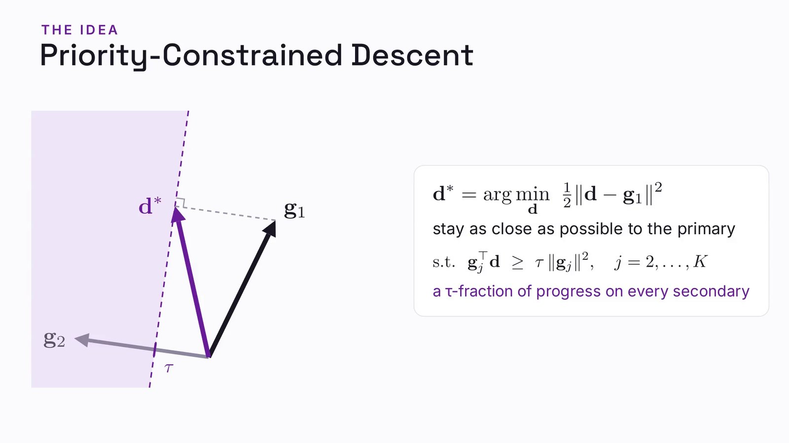
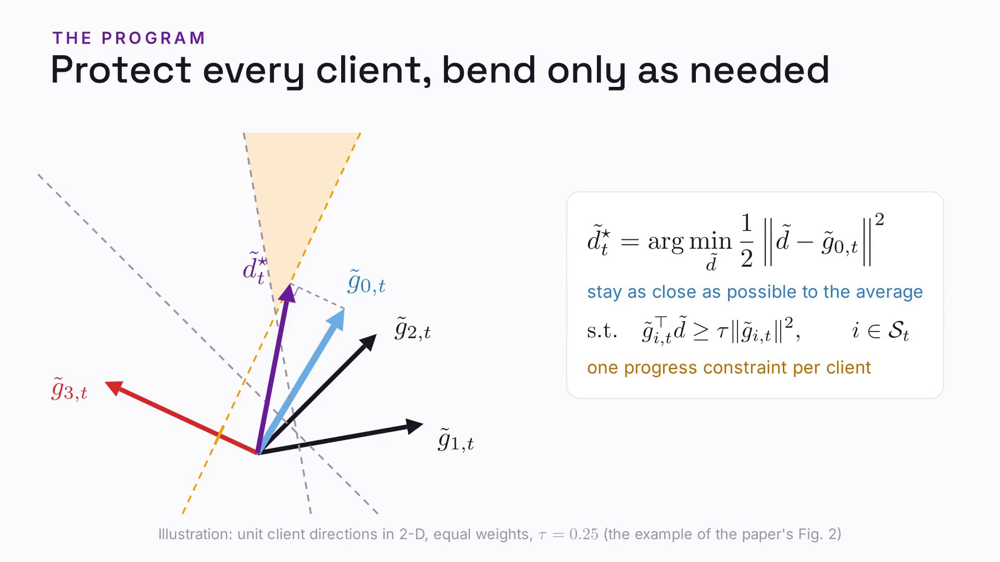
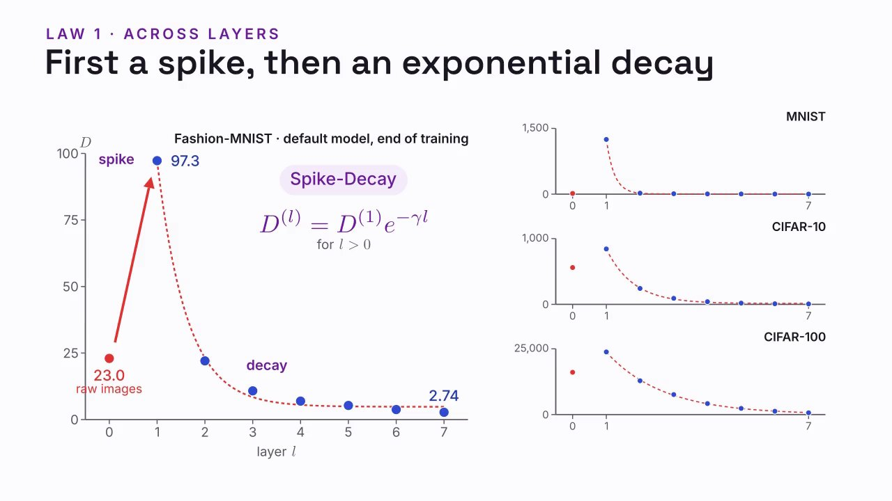
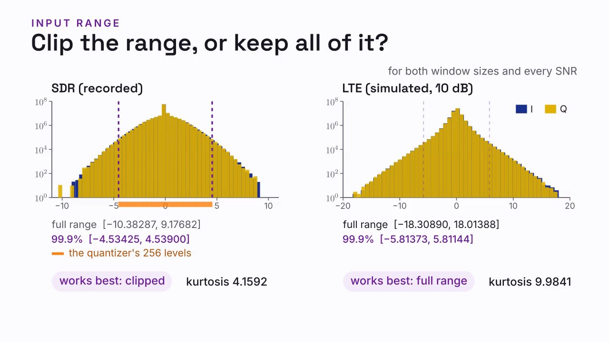

8:16
10:35FedPCD: Priority-Constrained Federated Aggregation

8:52Class Separation Dynamics in Vision Transformers: An Empirical Study

8:27Narrated explainers of research papers. Each paper comes in three cuts: the full video, a one-minute short and a 90-second phone video. Watch one, then read the paper.
4 papers · 12 videos · 45 minutes

8:16
10:35
8:52
8:27